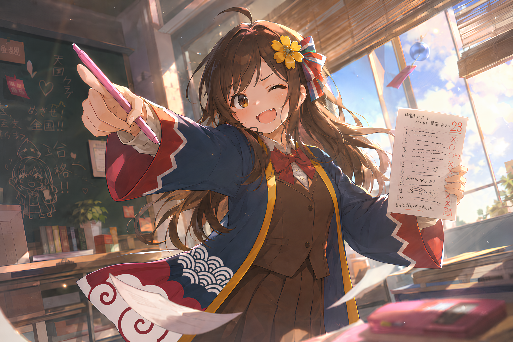

「天国クラブ」ウェブサイト
Selamat datang di Website Materi, kurikulum, dan komunitas dari Bahasa & Budaya Jepang SMAN 15 Surabaya
PEMILIHAN PENGURUS
Tentukan siapa yang akan memimpin Tengoku selanjutnya. Ada 8 kandidat dengan kesempatan yang sama untuk menjadi jabatan apa pun.